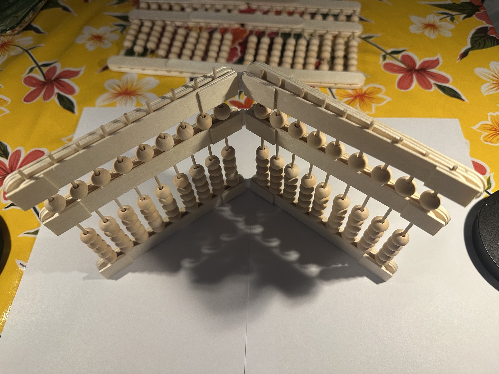

Welcome to math with tools

You can start with the article "what is an abacus?" under "articles and information"
start here interactive section
You can start with the article "what is an abacus?" under "articles and information"
start here interactive section